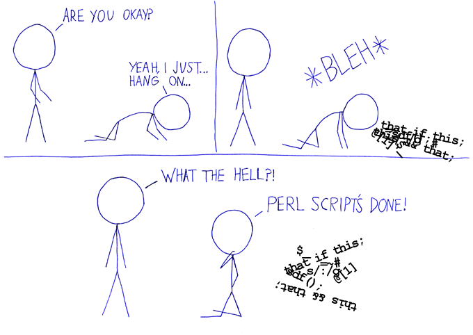

Perl is a popular write-only programming language used mostly for tasks too complicated for shell scripts and CGI programming -- and after all, we can't have things too user-friendly, can we? It is the brain-child of the homosexual linguist Larry Wall who created it with the intention of diving for pearls. But then he discovered that diving for pearls is more of a lesbian activity. After shopping for a vagina on eBay, Larry was disheartened. He therefore decided to unleash his frustrations by creating a language that could only be written, but not read. Also, Perl trumps Ruby on Fails, lulz. Perl wins.
Perl borrows features from a variety of other languages including C, shell scripting (sh), AWK, sed and Lisp. It's around as readable as MUMPS, which it shares a bunch of features with.
Structurally, Perl is a brainfuck comparable to that of brainfuck.
It is said that anything you might want to write can be done with CPAN and 40 lines of Perl code and that Perl is about a million times more concise than Java.
Perl nerds (who call themselves "monks") are people who learn the highly intricate syntax to a point where they are actually able to read simplistic Perl code written by others. This, of course, is evidence that masturbation is alive and well.
One of the most famous Perl enthusiasts is ghettofinger. A shadowy mastermind of drama masquerading as a simple internets user, ghettofinger employs Perl to continually power and make more efficient the drama gulag. This illustrates that Perl is the most evil and drama-producing thing on the internets today.
The creator of Perl named it after the concept of The Pearl of Heaven, that the language is as beautiful as heaven itself. What do you think, is it as beautiful? Here's an example of a Perl program:
$_='while(read+STDIN,$_,2048){$a=29;$b=73;$c=142;$t=255;@t=map{$_%16or$t^=$c^=(
$m=(11,10,116,100,11,122,20,100)[$_/16%8])&110;$t^=(72,@z=(64,72,$a^=12*($_%16
-2?0:$m&17)),$b^=$_%64?12:0,@z)[$_%8]}(16..271);if((@a=unx"C*",$_)[20]&48){$h
=5;$_=unxb24,join"",@b=map{xB8,unxb8,chr($_^$a[--$h+84])}@ARGV;s/...$/1$&/;$
d=unxV,xb25,$_;$e=256|(ord$b[4])<<9|ord$b[3];$d=$d>>8^($f=$t&($d>>12^$d>>4^
$d^$d/8))<<17,$e=$e>>8^($t&($g=($q=$e>>14&7^$e)^$q*8^$q<<6))<<9,$_=$t[$_]^
(($h>>=8)+=$f+(~$g&$t))for@a[128..$#a]}print+x"C*",@a}';s/x/pack+/g;eval
Another example:
$/=$_;$,=shift;$w=$a=shift;$k{+shift}=1;socket S,2,1,6;bind S,&a;for(listen
S,5;$SIG{ALRM}=\&i;m! (\S+) ([e-i])([^/]*)/!s&&($k{$w=$1}=$,eq$`)&&&$2){alarm
9;(accept(C,S),alarm 0)?read C,$_,1e6:($_="$, $a f".shift)}sub i{}sub t{socket
C,2,1,6;$k{$w}&&=(connect C,&a)?print C"$, ".pop:0;close C}sub h{t"$_ i/"for
keys%k}sub a{$w=~/:/;pack'CxnC4x8',2,$',split'\.',$`}sub f{$w=$_,t"$1 $3/"for
keys%k}sub e{open C,'>',$3;print C $'}sub g{open(C,'<',$3)&&t"$a e$3/".<C>;&h}
The above code is the smallest P2P program known to man, called Molester and supposedly pronounced "mole ster." This speaks volumes about the mindset of the average Perl user.

Linux and BSD distros usually almost fucking always include Perl as a default package. Windows users should get strawberryperl and Macfags should get ActivePerl from the link below.
On Ubuntu/Debian you can simply use the "apt-get" command
sudo apt-get install perl
On Redhat/fedora
sudo yum install perl
on suse
sudo yast install perl
on Arch Linux
sudo pacman -S perl
on Gentoo
sudo emerge install perl
i. Download Perl 5.10.1 from :
http://anonym.to/http://www.perl.com/CPAN/src/stable.tar.gz
ii. Remove the old Perl from the system before building
# rm -rf /usr/lib/perl5
p/s : you might want to back up your old install first.
# mv /usr/lib/perl5 /root/perl5backup
Installation :
i. # tar xvzf stable.tar.gz
ii. # cd perl-5.10.1
iii. For more information , # ./Configure --help
# ./Configure -de \
-Dprefix=/usr \
-Dcccdlflags='-fPIC' \
-Darchname=i386-linux
iv. # make
v. # make test
vi. # make install
Post Installation :
i. # perl -MCPAN -e shell
Just Follow step by step. Use all the Default Answer.
ii. install Bundle::CPAN
iii. install Bundle::LWP
iv. install Bundle::DBI
v. install DBD::mysql
To test the install run.
perl -v
or
GET -ed www.yahoo.com
Though there are several books available to someone wanting to learn perl, O'Reilly's "Learning Perl" is widely considered to be the best book for newcomers to Perl.
Here is an awesome tutorial.
A basic hello world example in perl.
#!/usr/bin/perl
#This will print "Hello World!"
print "Hello world!";
The #!/usr/bin/perl tells the operating system where the perl interpreter is located on your computer. This will be ignored on windows, and isn't required for it, but it should be left in for *NIX users.
The # denotes a comment in perl, comments are purely to make it easier for humans to understand what the code is (supposed to be) doing, this is probably one of the most useful features of perl due to it's brainfuck syntax, fucking use these!
Then finally print, of course, prints the text which is in the quotes to the terminal.
There are several different types of variables in perl denoted by different symbols these are scalar ($), arrays (@), hashes (%), subroutines (&), and typeglobals which use (*).
Basically, scalars are what you could expect of a "variable" in perl, however, they can be anything, from integers to floats to strings to objects to scalars, etc.
#!/usr/bin/perl
use strict; #Make sure we use proper coding conventions
# Declaring a variable is easy, just use "my" the first time you use it, then use
# the equals sign to set it to whatever Number you want.
# Perl automatically knows that this is an integer. Fuck yeah.
my $integer = 1 ;
# print can take and print multiple arguments separated by a comma. The first argument is our integer to be printed
# The second argument is an escaped newline (which prints a "new line", how novel.)
# An actual newline shouldn't be used since it would shift your code down a line (obviously)
print $integer, "\n";
# you can also use a different syntax for print:
print ($integer, "\n"); #it works the exact same way as the other one, it's a matter of style.
# and don't forget the \n at the end of a line when using print.
# Declaring a float (essentially an integer with more precision, a decimal place!) is the same
my $float = 3.9 ;
# you can use comments wherever you want in your code, but make sure not to put
# any comments in front of your code, since you can't close them
# like this #print $float, "\n";
# as comments only end at the end of the line in perl
# you can also put comments at the end of a line
print "penis\n"; #like this
# declaring a string is simple. if you don't need to use any escaped characters like \n
# you can just put it in single quotes like so:
my $string = 'loldongs';
# this makes the string "literal", i.e. any variable names or special characters (like \n) are not parsed into their "normal" meanings
# otherwise you put it in double quotes, like this:
my $otherString = "lol\ndongs";
# you can also put a variable in a double quoted string to put its value in it, like this:
my $yetAnotherString = "$float $string"; #which is the same as "3.9 loldongs"
my $areWeDone = "All Done With Scalars!\n";
print $areWeDone; #yes we are
You can use modules in your programs like so.
use Module::Name;
Modules are great because they allow you to simply download shit from CPAN (The Central Penis Archive Network). You can download them, then include them with use and make scripts with much less effort. Much like rule 34, if it exists, there's a module on CPAN.
Perl has many benefits over PHP as a CGI scripting language for the proficient programmer, it's faster and takes less resources. The downside is that it isn't as newfag programmer friendly, and not as easy to run on non-unix boxes. Not that anyone in their right mind would that though.
Even ruby on fails (perl with training wheels for web) runs huge websites you aren't tempted to give a shit about.
If efficiency is your goal in a CGI script, perl is probably the language to code said shit in.
use strict;
Using Strict makes catching errors easier, in many ways. Under strict, you are forced to declare all of your variables with the word my and failing to do so will result in an error. Strict also restricts you from using any symbolic references. If you don't use strict, then chances are that you suck at programming. Even moreso than Alan Turing sucks dicks (but at least he could program, you sad sack of shit).
{kind=link}